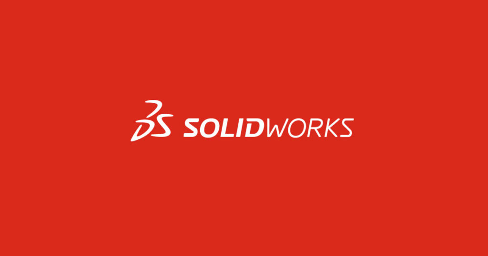
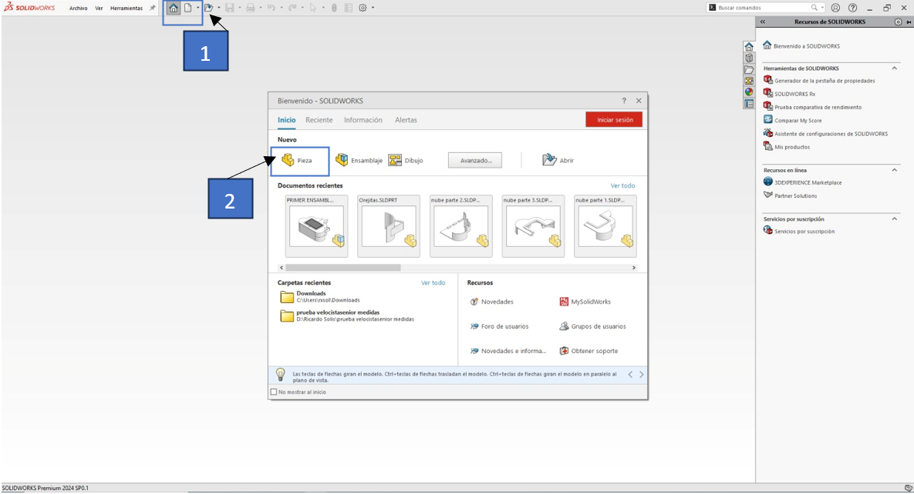
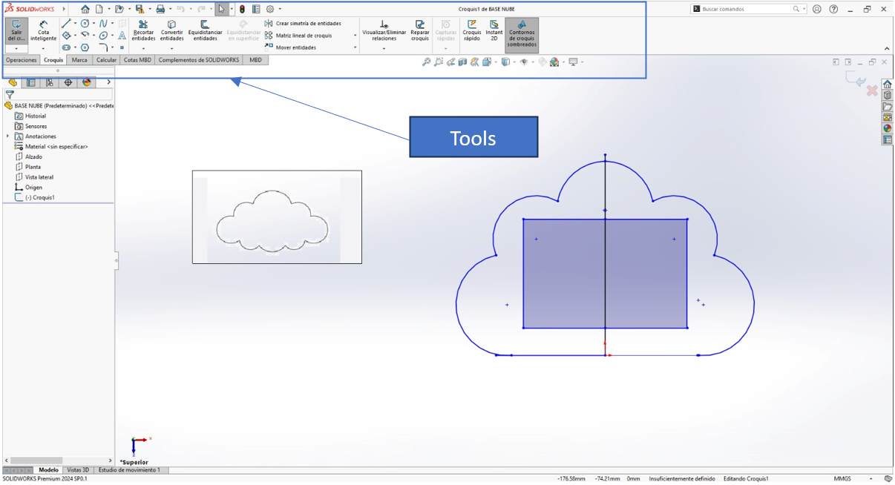
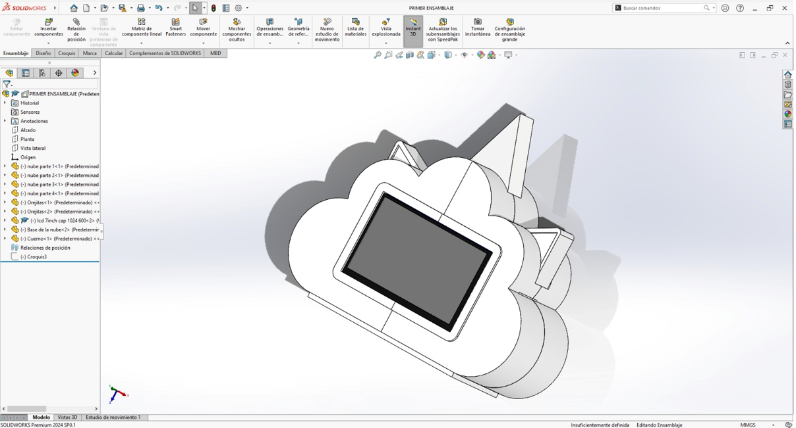

Hello, join me in designing the structure for my project; it will have a friendly and calming shape.
Software
STEP 1: For the first step i used this software for the design.
Solidworks
They are paid software, you can use the trial version or you can use:
Grabcad

Start whit the design
STEP 1: Let's start with the 3D modeling, we set up our workspace.

STEP 2: The design we're working on is more contoured, so we'll input a graphic as the base to use as a reference model.

Extrusion: This operation allows extending a two-dimensional profile along an axis to create a three-dimensional shape.
Revolution: It allows rotating a profile around an axis to create a solid shape.
Cut:Used to remove material from a model using a profile or a series of profiles.
Fillet and Chamfer:These operations are used to add rounded or beveled edges to the edges of a model.
Union:Allows combining two or more solid bodies into one.
Intersection:Used to create a new solid body based on the region where two or more existing bodies overlap.
Difference:This operation removes the part of a solid body that overlaps with another solid body.
Multi-body:Refers to operations that affect multiple solid bodies simultaneously, such as pattern operations.
Drawing and sketch creation:Allows users to create two-dimensional profiles that can be used to generate three-dimensional features.
Simulation and analysis:SolidWorks also offers operations to simulate and analyze the performance of models in terms of stress, fluid flow, movement, etc.
With these tools we form the solid in 3D, this model has a visual appeal for people with ADHD

This 3D design will be partially sectioned for better assembly and positioning of the internal components.